Veggie Sushi Hearts and Almond Dipping Sauce
Veggie Sushi Hearts and Almond Dipping Sauce
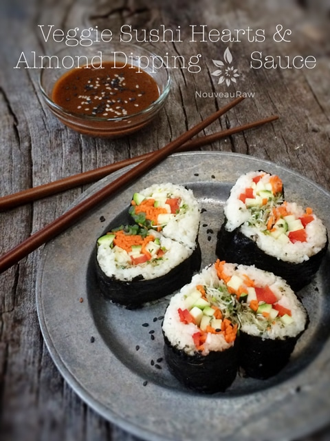
~ raw, vegan, gluten-free ~
Grab a green smoothie, slide a chair over and let’s talk jicama, also known as yam bean! And I promise I am not making this stuff up.
This large, odd-looking root vegetable that causes some people to give it a wide berth as they pass it in the produce aisle. I know, I did this for years! I posted a picture of one down below just in case you are new to this veggie. It compares to turnips or parsnips in shape and is known for its sweet white flesh, which has an excellent crunchy texture. Perfect for raw rice making!
Jicama is a highly nutritious vegetable and is low in calories. One hundred grams of raw jicama contains just 35 calories. And I don’t care how young or how old you are… fiber doesn’t equate to just being for the geriatric (meaning, for the elderly). Lol, We ALL need it. The soluble fiber in jicama is excellent for lowering cholesterol, helps to stabilize blood sugar levels and boosts digestive health.
They are composed of 86-90% water, so there will be some hand-squeezing work in this recipe. I squeezed 1 cup of liquid out of 3 1/2 cups of riced jicama. This step is so important because if you skip it, your sushi will be soggy and fall apart.
When you are at the grocery store and if you are brave enough to approach the jicama section, look for ones that are smooth and firm, with uniform shape and size. They should be free from any damage to the skin and have a crisp, succulent, white sweet-starchy flesh. Whenever I purchase one, I ask the produce person to cut it in half for me, so I can make sure that I am going home with a really good one. Never be afraid to ask them to do this for you.
If you are new to rolling sushi, my best advice is to purchase a sushi rolling mat, be confident, be patient, and have fun. What a great dish to make with your family. Each family member can create their own according to their particular tastes. If you are not crazy about rolling your own, check this tool out. I have one, and they are too a lot of fun. Enjoy.
Jicama rice:
- 1 lb 5 oz Jicama (3 1/2 cups after being riced)
- 2 Tbsp raw agave
- 1 Tbsp raw apple cider vinegar
Veggies:
- 1 medium red pepper
- 1 bunch green onions
- 1 medium carrot
- 1 medium zucchini
- Sprouts
Almond Dipping Sauce: yields 1 1/2 cups
- 1/2 cup water
- 1/2 cup raw almond butter
- 2 Tbsp tamari sauce
- 1 Tbsp raw honey or coconut nectar
- 2 tsp rice vinegar
- 1 tsp toasted sesame oil
- 1/4 tsp cayenne pepper
- 1/4 tsp ground ginger
- 1/4 tsp ground garlic
Preparation:
Jicama rice:
- Peel and dice the jicama. Place in a food processor, fitted with an “S” blade. Pulse until it reaches the size of rice. I stress, pulse. The pulse button causes the chunks of jicama to bounce around and dice up evenly. If you just hit on, you run the chance of the bottom pieces to turn into a puree with untouched chunks on top.
- Lay out a clean dish towel and place the riced jicama in the center of the towel. Gather up the edges and hand squeeze the jicama juice from the towel. Use as much hand strength that you have.
- Place the riced jicama in a bowl and add the agave and apple cider vinegar. Taste test. Rice vinegar can be used instead of the apple cider vinegar, but it isn’t a raw product. Mix together and set aside.
- Tip: if you can’t locate jicama, you can use either parsnips or cauliflower in its place.
Veggies:
- Slice the red pepper, green onions, carrot, and zucchini into thin strips. Feel free to use any veggies that you desire. This is what I had on hand. Avocado would be wonderful to add as well.
Dipping sauce:
- In the blender combine the ingredients in the following order; water, almond butter, tamari sauce, honey, vinegar, oil, cayenne, ginger, and garlic.
- Blend for 30 seconds, until creamy. Place in a bowl for dipping.
Assembly:
- Lay the nori sheet (shiny side down) on a sushi rolling mat. Make sure the bottom edge of the nori is lined up with the bottom of the bamboo mat.
- Spread a layer of jicama rice on the lower half of the nori wrap.
- Layer on the veggies.
- Lift up the edge of the sushi bamboo mat and start to roll away from your body. At the same time, use your fingers to draw in the veggies and tuck them firmly into the wrap as you roll it away from you.
- Once you reach the other edge, wet your finger and wet the edge of the nori sheet. Much like licking an envelope shut. Give it a firm squeeze and remove the wrap.
- With a very sharp knife, make 1 1/2” slices. Clean the knife in between cuts. Be careful that you don’t squish the sushi roll flat during this process. Use a sawing motion if needed.
- To create the heart shapes; lay each slice over, press the roll into the palm of one hand, creating a flat side. Cup your other palm around the other side, creating half a heart shape. Do this technique into two pieces and push together. Fine-tune the bottom tip to help define the shape.
- Serve with a dipping sauce or Tamari. Enjoy!
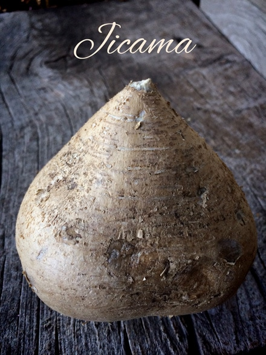
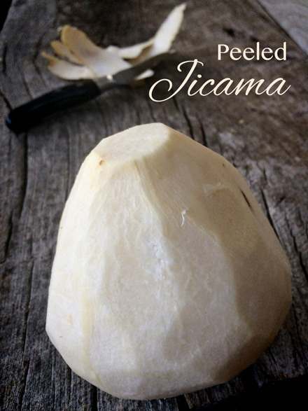
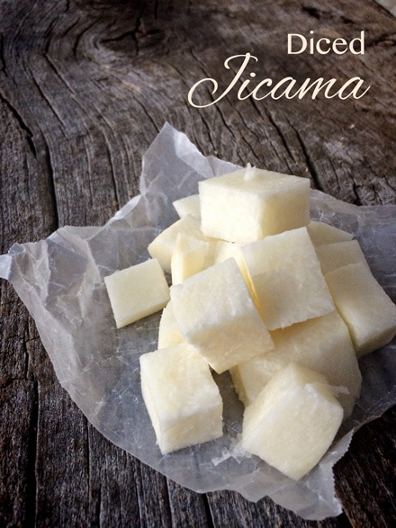
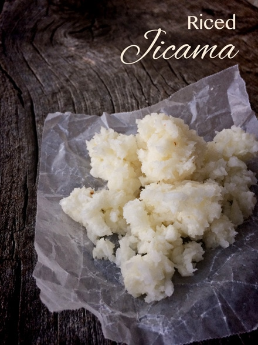
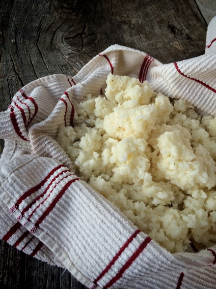
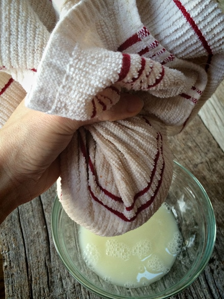
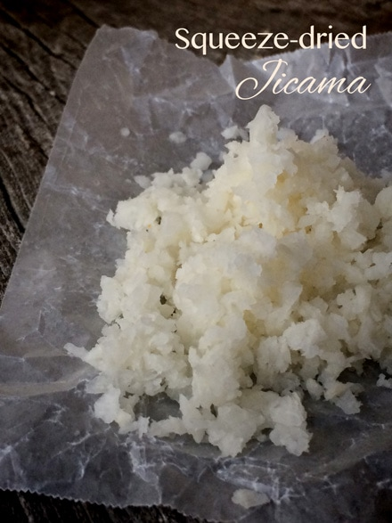
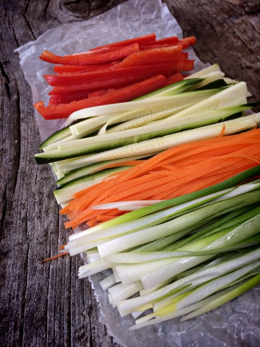
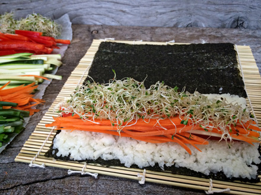
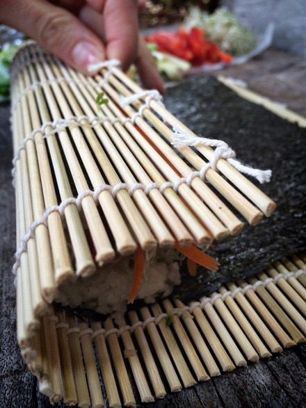
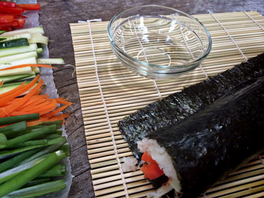
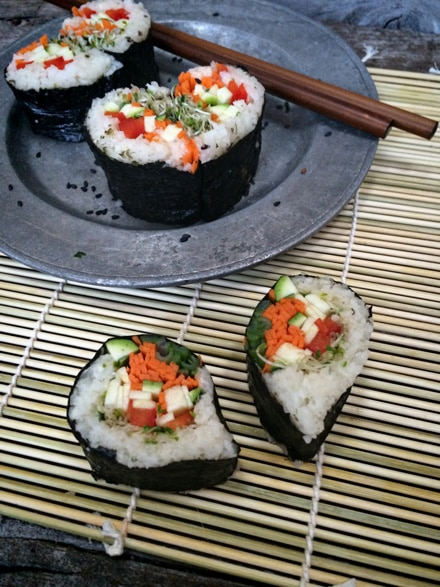
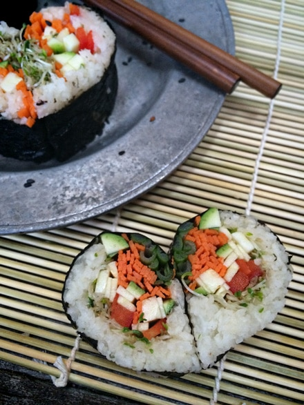
© AmieSue.com